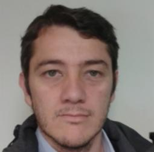

José Darío Agudelo Giraldo
M.Sc. in Science - PhysicsDoctoral Researcherjdagudelog@unal.edu.co
Education
- Industrial Automation Technologist, Servicio Nacional de Aprendizaje, SENA, 2002.
- B.Sc. in Engineering Physics, Universidad Nacional De Colombia, 2010.
- M.Sc. in Science - Physics, Universidad Nacional de Colombia, 2012.
Current Research
Publications
- J.D. Agudelo-Giraldo and H.H. Ortiz-Álvarez and J. Restrepo and E. Restrepo-Parra, Magnetic Atomistic Modelling and Simulation of Nanocrystalline Thin Films , Superlattices and Microstructures ,, , (2017), pp. - .
DOI: http://dx.doi.org/10.1016/j.spmi.2017.02.032 - J.D. Agudelo-Giraldo and S. Morales-Rojas and V.A. Hurtado-Marín and E. Restrepo-Parra, Influence of radial and tangential anisotropy components in single wall magnetic nanotubes. A Monte Carlo approach , Physica A: Statistical Mechanics and its Applications ,466, , (2017), pp. 440 - 449.
DOI: http://dx.doi.org/10.1016/j.physa.2016.08.030 - O.D. Arbeláez-Echeverri and J.D. Agudelo-Giraldo and E. Restrepo-Parra, Atomistic simulation of static magnetic properties of bit patterned media , Physica E: Low-dimensional Systems and Nanostructures ,83, , (2016), pp. 486 - 490.
DOI: http://dx.doi.org/10.1016/j.physe.2015.12.016 - J.D. Agudelo-Giraldo and E. Restrepo-Parra and J. Restrepo, Correlation between vacancies and magnetoresistance changes in FM manganites using the Monte Carlo method , Journal of Magnetism and Magnetic Materials ,391, , (2015), pp. 129 - 135.
DOI: http://dx.doi.org/10.1016/j.jmmm.2015.04.102 - E. Restrepo-Parra and J.D. Agudelo-Giraldo and J. Restrepo, Thickness and bilayer number dependence on exchange bias in ferromagnetic/antiferromagnetic multilayers based on La1−xCaxMnO3 , Physica B: Condensed Matter ,440, , (2014), pp. 61 - 66.
DOI: http://dx.doi.org/10.1016/j.physb.2014.01.007 - J.D. Agudelo-Giraldo and E. Restrepo-Parra and J. Restrepo, Monte Carlo simulation of roughness effect on magnetic and magnetotransport behavior of La2/3Ca1/3MnO3/La1/3Ca2/3MnO3 bilayers , Physica B: Condensed Matter ,434, , (2014), pp. 149 - 154.
DOI: http://dx.doi.org/10.1016/j.physb.2013.11.014
PCM Computational Applications, designed by: jdalzatec, odarbelaeze